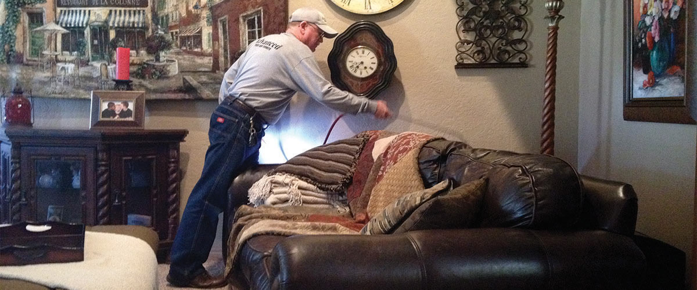

What we see most often in and around Lawton, the signs to look for, and how we deal with each one. Not sure what you have? Call and we’ll come find out.
01
Termites
Colonies range from 500,000 to millions of termites, and every year they cost American homeowners over 5 billion dollars. Small cracks and seams around pipes are the most common way in.
Signs
Swarms in spring
Rotting wood near the house: pull it back and look underneath
Dirt inside wood that wouldn’t normally be there
Moisture and wood together outside
Cracks in the foundation, plumbing and doors
How we treat
An inspection first. If you do have termites, you get an estimate based on the square footage of the home and the extent of the infestation. We treat with Termidor and make sure to kill the queen.
02
Bees & killer bees
Two kinds are common around Lawton: normal honey bees and killer bees. They look the same, but killer bees are far more aggressive. When they get mad they send out almost the whole hive, and they will follow you. Vibrations and carbon set them off, which is why people get attacked while mowing.
Good to know
More aggressive in late summer and early fall
A hive can hold up to 80,000 bees
Drawn to soap, perfume, hair spray and bright colors
Hives are in hollow cavities or on exposed branches
How we treat
Don’t ignore a hive and don’t tackle it yourself. Call us and we’ll get rid of it safely and effectively, at home or at the office.
03
Rats, mice, squirrels, raccoons
Found in homes, attics, garages, sheds and buildings, rodents carry disease, contaminate food and destroy property, and they’re among the harder pests to get rid of.
Signs
Droppings
Footprints in moist or dusty places
Holes in the ground
Scurrying noises in the attic
Prevention
Clear out boxes, trash and cartons they can shelter in
Lids on trash cans, fix leaky faucets
Seal every entry point with metal or similar; concrete under the foundation
How we treat
Catch-remove-release: traps and lockboxes around the home and in the attic, safe around pets and children, then the animal is released back into the wild.
Extermination: a dehydrating rodenticide that sends the rodent outside to look for water, so it doesn’t die inside your home and leave a smell behind.

04
Bed bugs
Not just a dirty-motel problem: they ride home on luggage, furniture and in cars, then hide in mattresses, furniture, light fixtures and outlets. One treatment is not enough to kill them.
Bites
Red, with a darker red spot in the middle
Severe itching, blisters or hives
Often in a rough line or cluster
Usually face, neck, chest and upper arms
Protect yourself
Check hotels for reported bed bug problems
Wash all your clothes as soon as you get home from a trip
Inspect the mattress whenever you change the sheets
05
Mosquitoes
Season starts in spring, peaks in summer and tapers off in fall, and doesn’t fully end until the first freeze or steady temperatures below 50°. Besides the itching, mosquitoes carry diseases like West Nile Virus.
Tips
Get rid of stagnant water
Use repellent for late-afternoon and evening activities
How we treat
A highly effective spray that makes mosquitoes leave your yard and not come back, and it’s safe for your family, pets and plants.
06
Ants
Indoors they come through tiny cracks for food and water and leave a scent trail for the rest to follow. Nests are hard to find, and an indoor problem can grow fast. Outdoors, mounds and fire ant bites plague Lawton yards.
How we treat
Indoor ant problems often need a professional to eliminate completely. If you want them gone for good without putting yourself at risk, give us a call.
07
Wasps & yellow jackets
Very common in Lawton, more aggressive than bees and able to sting again and again. An injured wasp gives off a scent that brings the others after you, which is why knocking a nest down with a stick goes so badly.
Where they nest
Paper wasps: umbrella-shaped nests under eaves and overhangs
Hornets: football-shaped nests
Yellow jackets: underground
How we treat
Seen a nest, or a lot of wasps around the house or office lately? Call and we’ll take care of it safely and quickly.
08
Spiders
Most Lawton spiders are more annoying than harmful, but the area also has brown recluse (fiddleback), black widow, tarantula and wolf spiders.
Brown recluse
Three pairs of eyes in a circle and a dark fiddle-shaped mark behind them. Hides in old clothes, shoes, bedrooms, attics and under furniture. If you think you’ve been bitten, seek medical attention right away.
Black widow
The female is shiny black with a red hourglass underneath. Look under eaves, around trash cans and in stacked boxes or wood.
How we treat
A water-based spray that isn’t harmful to your family or pets, applied to the whole inside and outside of the house to keep spiders out.
09
Scorpions
Small scorpions are common in Lawton. The sting is very painful, with swelling and numbness; people who are allergic should get medical help immediately. They’re most common in warm weather and most active at night.
How we treat
We spray to get rid of them and remove their habitat from your home. Don’t panic, just give us a call.
10
Snakes
The most common snakes in Lawton are rattlesnakes, copperheads and garter snakes. Rattlesnakes and copperheads are venomous. If you spot one, don’t approach it unless you’re absolutely sure what it is.
Copperhead
Light tan or brownish body with dark hourglass markings, up to about 3 feet. Wooded areas, rocks, near streams or ponds.
Rattlesnake
Look for the rattle. Prairies, grasslands, woods. A bite can be fatal: get medical attention immediately.
How we treat
We remove snakes from homes, yards and offices safely, with the knowledge and experience to handle venomous ones.
11
Ticks & fleas
You don’t need a cat or dog to get them: people and the things they bring home carry them in too. They can spread diseases like Lyme disease, ehrlichiosis and Rocky Mountain spotted fever.
Keep ticks away
Keep the grass cut
Thin vegetation near wooded areas
Trim overhanging shrubs and trees
Remove fallen leaves
How we treat
Think you have fleas or ticks at home or at the office? Call Advanced Pest and Termite.
12
Cockroaches
Three main kinds live around Lawton: German, American and Asian. They love warm climates and will move into a home or office any chance they get.
Which one?
German: light brown, two black stripes behind the head, ½–⅝ inch. Kitchens and bathrooms.
American: the largest, about an inch, reddish brown with a yellow line behind the head.
Asian: mostly outdoors, under mulch, stones and leaves.
How we treat
We spray the inside and outside of your home, making sure it’s roach-free from top to bottom.
For businesses
Flying insect control systems
Nothing turns customers off like flies landing on their tables and food. For restaurants and small businesses we set up a flying insect control system that can be hidden from your customers’ view, still catches the flies, and makes no “zapping” sound.
Keep pests out of your business
Take the trash out daily
Keep the dumpster away from the building
Seal holes, gaps and cracks
Keep break rooms clean and don’t leave food at desks
Don’t stack cardboard; rodents hide behind it
No stagnant water outside
Work around your schedule
One-time problem or ongoing prevention, we work around your hours with as little interruption as possible, and fix it the most cost-effective way we can.